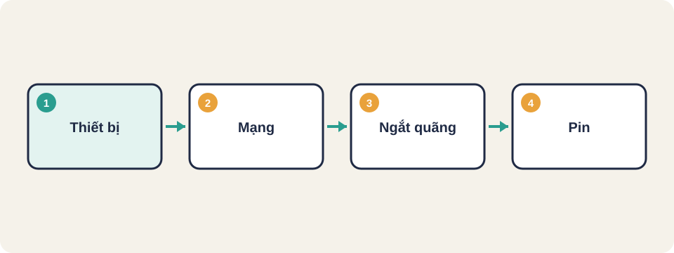
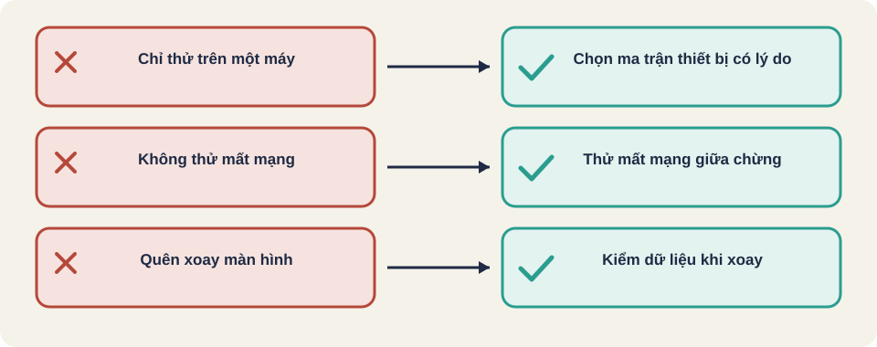

Hình vẽ gốc, dùng để minh họa thứ tự các bước chính của bài.
Thiết bị và hệ điều hành đa dạng, mạng yếu, ngắt cuộc gọi và xoay màn hình. Công cụ Espresso và XCUITest.

Hình vẽ gốc, dùng để minh họa thứ tự các bước chính của bài.
Thuật ngữ trong slide này: Ma trận thiết bị (device matrix): Bảng liệt kê các máy và hệ điều hành sẽ kiểm, kèm lý do chọn từng máy.
Kiến thức chung về kiểm thử di động [kiến thức chung].
Thuật ngữ trong slide này: Ngắt quãng (interruption): App bị gián đoạn bởi cuộc gọi, thông báo, chuyển ứng dụng, hoặc mất mạng.
Không thể thử hết mọi máy. Chọn một nhóm đại diện: một máy Android phổ biến, một máy iOS phổ biến, một máy màn hình nhỏ, và một bản hệ điều hành cũ còn nhiều người dùng. Ghi lý do chọn mỗi máy.
1. Mở giỏ hàng, bấm Thanh toán
2. Tắt Wi-Fi và dữ liệu di động đúng lúc bấm
3. Kỳ vọng: thông báo mất mạng rõ ràng
4. Bật mạng lại, bấm thử lại
Kỳ vọng: không bị trừ tiền hai lần, giỏ hàng còn nguyênKiến thức chung [kiến thức chung].
| Nền tảng | Công cụ trong repo | Việc làm |
|---|---|---|
| Android | Espresso (hai bài viết của Novoda) | Kiểm thử giao diện trên máy hoặc giả lập |
| iOS | XCUITest (một bài viết) | Kiểm thử giao diện bằng Xcode |
| Đa nền tảng | Appium | Một bộ ca cho cả hai, dùng driver riêng cho từng nền tảng |
Tên công cụ lấy từ repo và bài tổng quan. Chưa đọc được bài Espresso của Novoda khi soạn bài này.
| Thiết bị | Hệ điều hành | Lý do chọn |
|---|---|---|
| Máy Android giá trung bình | Android bản hiện tại | Nhiều người dùng ở Việt Nam |
| iPhone | iOS bản hiện tại | Trình duyệt và giao diện khác |
| Máy màn hình nhỏ | Android bản cũ | Kiểm bố cục và chữ bị cắt |
Trong các ca trên, ca nào giả lập không đủ? Gợi ý: pin yếu, cuộc gọi thật, mạng thật.
Nguồn: FreeLearningResourcesForSoftwareTesters, mục "Mobile Testing". Liên kết gốc nằm trong repo, chưa kiểm lại khi soạn bài.

Thuật ngữ trong slide này: Ma trận thiết bị (device matrix): Bảng liệt kê các máy và hệ điều hành sẽ kiểm, kèm lý do chọn từng máy.
Ma trận thiết bị (device matrix)
Simulator / emulator
Ngắt quãng (interruption)
Thuật ngữ trong slide này: Ma trận thiết bị (device matrix): Bảng liệt kê các máy và hệ điều hành sẽ kiểm, kèm lý do chọn từng máy.